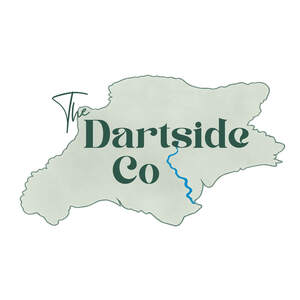

Trade Mark Journal No.2026/008 20 February 2026
UK00004333333 1 February 2026 (30,35,43)

- Class 30
- Coffee; Coffee drinks; Cappuccino; Coffee based drinks; Iced coffee; Chocolate coffee; Coffee beverages; Coffee pods; Flavoured coffee; Beverages with coffee base; Beverages with a coffee base; Instant coffee; Coffee beans; Coffee extracts for use as substitutes for coffee; Danish pastries; Bakery goods; Decaffeinated coffee; Coffee based beverages; Ground coffee; Coffee flavourings; Coffee (Unroasted -); Unroasted coffee; Caffeine-free coffee; Malt coffee; Coffee beverages with milk; Coffee bags; Roasted coffee beans; Freeze-dried coffee; Espresso; Beverages made from coffee; Beverages made of coffee; Coffee in whole-bean form; Ground coffee beans; Mixtures of coffee; Prepared coffee and coffee-based beverages; Coffee in brewed form; Prepared coffee beverages; Coffee [roasted, powdered, granulated, or in drinks]; Tea; Tea beverages with milk; Iced tea; Sandwich wraps [bread]; Sandwiches; Hamburger sandwiches; Toasted cheese sandwich; Wraps [sandwich]; Toasted cheese sandwich with ham; Frankfurter sandwiches; Cheeseburgers [sandwiches]; Chicken sandwiches; Turkey sandwiches; Toasted sandwiches; Wrap sandwiches; Sandwiches containing salad; Fish sandwiches; Sandwiches containing chicken; Sandwiches containing hamburgers; Sandwiches containing meat; Open sandwiches; Filled sandwiches; Hot dog sandwiches; Sandwiches containing fish; Sandwiches containing fish fillet; Burgers contained in bread rolls; Pizza; Hot sausage and ketchup in cut open bread rolls; Pizza crusts; Hamburgers contained in bread buns; Hamburgers contained in bread rolls; Bacon buns; Bread buns; Bread and buns; Hamburgers being cooked and contained in a bread roll; Stuffed bread; Toasted bread; Bread; Pita bread; Bagels; Pizzas.
- Class 35
- Retail services in relation to coffee; Business management of wholesale and retail outlets; Business management of retail outlets; Retail store services in the field of clothing; Online retail store services in relation to clothing; Online retail store services relating to clothing; Retail services in relation to confectionery; Unmanned retail store services relating to drink; Retail services in relation to beer; Retail services in relation to jewellery; Retail services in relation to furnishings; Retail services in relation to clothing; Retail services in relation to bakery products; Retail services relating to jewelry; Retail services in relation to chocolate; Retail services relating to clothing; Retail services relating to food; Retail services in relation to fashion accessories; Retail services in relation to non-alcoholic beverages; Retail services in relation to teas; Retail services connected with the sale of clothing and clothing accessories.
- Class 43
- Cafe services; Café services; Cafés; Coffee shops; Coffee shop services; Bar and restaurant services; Restaurant and bar services; Bistro services; Take-away restaurant services; Coffee bar services; Fast-food restaurant services; Self-service restaurant services; Take-out restaurant services; Restaurant services; Restaurants (Self-service -); Self-service restaurants; Mobile restaurant services; Serving food and drink in restaurants and bars; Restaurant services incorporating licensed bar facilities; Catering in fast-food cafeterias; Providing food and drink in bistros; Providing food and drink in restaurants and bars; Snack bar services; Eateries; Tourist restaurants; Delicatessens [restaurants]; Restaurants; Provision of food and drink in restaurants; Serving food and drink for guests in restaurants; Restaurant services for the provision of fast food; Self-service cafeteria services; Take-away food and drink services; Catering of food and drinks; Takeaway food and drink services; Food and drink catering; Catering of food and drink; Catering (Food and drink -); Hospitality services [food and drink]; Corporate hospitality (provision of food and drink); Catering for the provision of food and beverages; Providing food and drink catering services for fair and exhibition facilities; Catering services for the provision of food and drink; Providing food and drink for guests; Catering for the provision of food and drink; Catering services for the provision of food; Serving food and drink for guests; Services for providing food and drink; Providing food and beverages; Catering services; Catering; Provision of food and beverages; Preparation of food and beverages; Tea rooms; Tea room services.
South Devon Railway Retail and Catering Limited